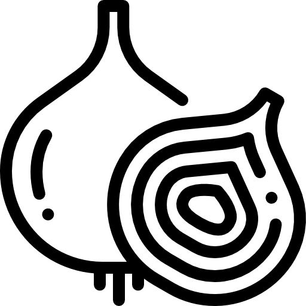

Safranfäden in einem Mörser zu feinem Pulver zermahlen. Anschließend mit etwas lauwarmem Wasser oder 2 Eiswürfeln auflösen.
Beiseite stellen und den Reis gründlich waschen und in Wasser einweichen. Zwiebeln in längliche Streifen schneiden.
nun Zwiebeln anbraten. Das Öl ins inem Topf geben und die Zwiebel bei mittlerer Hitze anschwitzen, bis sie leicht goldbraun sind.
1/2 der Zwiebeln herausnehmen und für später beiseite stellen.
Hähnchen zusammen mit der Knoblauch-Ingwer-Paste, Biryani Masala ( weitere unten für mehr info dazu), Chilipulver und Kurkuma
zu den restlichen Zwiebeln in den Topf geben. Alles bei mittlerer Hitze rundherum anbraten, danach Joghurt & Tomaten hinzufügen.
Die Tomaten und den Joghurt in den Topf geben und 1–2 Minuten weiter anbraten. danach folgend Kartoffeln & Pflaumen hinzufügen.
Die Kartoffeln und die getrockneten Pflaumen hinzufügen. Bei mittlerer Hitze weiter köcheln lassen, bis das Öl sichtbar wird
und das Fleisch gar ist. Nach Geschmack salzen. Den Topf vom Herd nehmen und beiseite stellen.
Den Topf vom Herd nehmen und zur Seite stellen für später.Nun wird der Reis gekocht. Das Einweichwasser des Reises abgießen.
Den Reis in reichlich Wasser mit Nelken, Sternanis und Lorbeerblatt kochen (wie bei der Pasta-Methode). Sobald der Reis zu 80 % gar ist,
abseihen und abtropfen lassen. Jetzt Schichten aufbauen. In einem großen Topf zuerst eine Schicht Reis, dann
die Hähnchen-Kartoffel-Soße (Masala) schichten. Zwischendurch frische Minze, Koriander, Zitronenscheiben
und das vorbereitete Safranwasser verteilen. So lange weiterschichten, bis alle Zutaten verbraucht sind.
Die letzte Schicht sollte Reis sein. Obenauf nochmals die Kräuter, das Safranwasser und die goldbraunen
Zwiebeln verteilen. zum schluss das finale Garen.Den Topf gut verschließen und bei niedriger Hitze ca. 20 Minuten garen lassen.
Falls nötig, ein Geschirrtuch zwischen Topf und Deckel legen, damit kein Dampf entweicht.
